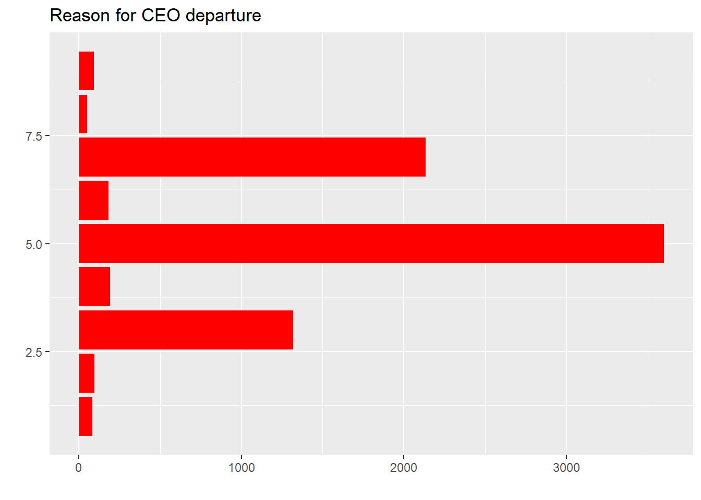

library(tidyverse)
library(tidytuesdayR)
library(ggplot2)
library(visdat)Q1
Exercise 1
The blog post by Manuel Rademaker describes a neat analysis of the Tidy Tuesday data on CEO departures. Re-run this analysis for yourself. Report any problems reproducing the results. Your primary task for this exercise is to outline all of the parts of the analysis, and label them as EDA, IDA or confirmatory analysis.
Load data and get an understanding
tt <- tidytuesdayR::tt_load('2021-04-27')--- Compiling #TidyTuesday Information for 2021-04-27 ------- There is 1 file available ------ Starting Download ---
Downloading file 1 of 1: `departures.csv`--- Download complete ---ceo <- tt$departuresFirstly after the relevant packages are loaded, the CEO data is extracted from the tidytuesday for 27th April 2021 using the tt_load function. Once we have the required data, the number of observations and variables were checked followed by checking the class of variables and if there are any missing values using the vis_dat function as seen below. This stage of the analysis is the Initial Data Analysis (IDA). Furthermore, I have reason to believe developing hypotheses and questions is also a part of IDA.
dim(ceo)[1] 9423 19vis_dat(ceo)Question 1: Overall distribution of depature
Below, there was an attempt to see a general distribution of the CEO departures. however, we encountered a problem where the object main_color was not found. This is because the object has not been defined but I have replaced it with another color. While the following codes carry out data wrangling to not include observations before the year 2000 as the data description informs the records should be from 2000 till 2018.
ggplot(ceo, aes(y = departure_code)) +
geom_bar(fill = "red") +
labs(
title = "Reason for CEO departure",
x = "",
y = ""
)Warning: Removed 1667 rows containing non-finite values (`stat_count()`).
ceo %>%
group_by(fyear, departure_code) %>%
count()# A tibble: 255 × 3
# Groups: fyear, departure_code [255]
fyear departure_code n
<dbl> <dbl> <int>
1 1987 5 1
2 1992 1 1
3 1992 3 10
4 1992 5 44
5 1992 6 1
6 1992 7 2
7 1993 1 2
8 1993 2 1
9 1993 3 25
10 1993 4 1
# ℹ 245 more rowsOnce the decision is taken to not include the data before 2000, the initial plot is made more presentable by using the departure_code and turning it into factor type naming it departure_label and plotted. However, we encounter the same problem as before where we do not have the object main_color which is because I have changed the fill for another color. The attempt to get the overall look and performance of the data can be classified as Exploratory Data Analysis (EDA) as we are not looking at the types of variables nor checking for missing values, but we see how the data looks upon visualization.
ceo_reduced <- ceo %>%
filter(departure_code %in% 3:7) %>%
mutate(
departure_label = as.factor(recode(departure_code,
`3` = "Bad performance",
`4` = "Legal",
`5` = "Retired",
`6` = "New opportunity",
`7` = "Other")),
fyear = lubridate::make_date(fyear)) %>%
relocate(fyear, departure_label) ceo_reduced %>%
group_by(departure_label) %>%
count() %>%
ggplot(aes(y = fct_reorder(departure_label, n), x = n)) +
geom_col(fill = "red") +
labs(
title = "CEO depature by reason",
subtitle = "S&P 1500 firms between 1987 - 2019",
x = "",
y = "",
caption = "Source: Gentry et al."
) +
scale_x_continuous(breaks = scales::breaks_width(500))Question 2: Reason for departure over time
In this question, the CEOs’ departures by reason over time were investigated:
ceo_reduced %>%
group_by(fyear, departure_label) %>%
count() %>%
ggplot(aes(x = fyear, y = n, color = departure_label)) +
geom_line() +
labs(
title = "CEO departure by reason over time",
subtitle = "S&P 1500 firms between 1987 - 2019",
color = "Reason",
y = "",
x = ""
)ceo_reduced %>%
filter(fyear != "1987-01-01") %>%
group_by(fyear, departure_label) %>%
count() %>%
group_by(fyear) %>%
mutate(share_fyear = n/sum(n)) %>%
ungroup() %>% # for fct_reorder!
mutate(departure_label = fct_reorder(departure_label, -share_fyear, last)) %>%
ggplot(aes(x = fyear, y = share_fyear, color = departure_label)) +
geom_line() +
labs(
title = "CEO departure by Reason over time",
subtitle = "S&P 1500 firms between 1987 - 2019",
color = "Reason",
x = "",
y = "% of total departures"
) +
scale_y_continuous(labels = scales::label_percent()) +
scale_x_date(
breaks = scales::breaks_width("4 years"),
labels = scales::label_date("%Y")
)Next, of the total departures, a plot was made to assess the reasons over time as percent of total departures. This stage of analysis also is EDA as we explore the trends of the data.
Question 3
In this stage of the analysis, the analyst looks to analyze the CEOs that show up twice, i.e. they record departures more than once.
ceo_al_twice <- ceo_reduced %>%
group_by(exec_fullname) %>%
mutate(appears_al_twice = n(), .after = departure_label) %>%
filter(appears_al_twice > 1) %>%
ungroup()
length(unique(ceo_al_twice$exec_fullname))[1] 471While here, the analyst looked to check how many appear more than twice, followed by looking to visualize that data to see any interesting patterns.
table(ceo_al_twice$appears_al_twice) / c(2, 3, 4)
2 3 4
430 39 2 While the following plot was declared not as meaningful, the analyst proceeded to highlight the path of the 2 CEOs that recorded departures 4 times as this is an interesting find, the rest of the plot was worked on more to highlight the changes that appear more.
ceo_changes <- ceo_al_twice %>%
arrange(fyear) %>%
group_by(exec_fullname) %>%
mutate(departure_no = 1:n(), .after = departure_label,
departure_no = fct_inorder(recode(departure_no,
`1` = "First departure",
`2` = "Second departure",
`3` = "Third departure",
`4` = "Fourth departure"))) %>%
ungroup()
ggplot(ceo_changes, aes(x = departure_no, y = departure_label, group = exec_fullname)) +
geom_line() +
labs(
x = "",
y = ""
)ceo_changes_freq <- ceo_changes %>%
count(departure_label, departure_no)
ceo_4_changes <- ceo_changes %>%
filter(appears_al_twice == 4)
ggplot(ceo_changes, aes(x = departure_no, y = departure_label)) +
geom_line(aes(group = exec_fullname), alpha = 0.2) +
geom_point(
data = ceo_changes_freq,
mapping = aes(size = n)) +
geom_line(
data = ceo_4_changes,
mapping = aes(group = exec_fullname, color = exec_fullname),
show.legend = FALSE) +
geom_text(
data = filter(ceo_4_changes, departure_no == "Fourth departure"),
mapping = aes(label = exec_fullname),
nudge_y = -0.1
) +
labs(
title = "Trajectories of the reasons for CEO departure",
subtitle = "S&P 1500 firms between 1987 - 2019",
x = "",
y = "",
size = "Number of cases"
) +
theme(legend.position="bottom")Thus, the plot is visualized pleasantly as it is giving more information. However, the steps taken in addressing this question do not confirm any hypothesis as no form of statistical testing took place, i.e. Confirmatory Data Analysis (CDA) and only EDA was observed since plots were made to gather insights with no clear connections observed.